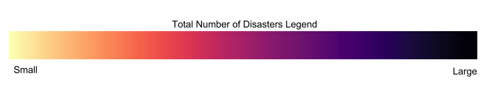
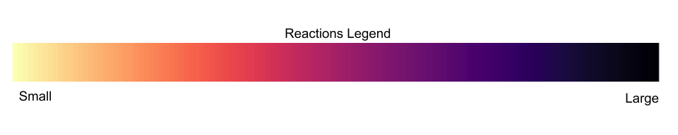

Results
Individual Disaster Analysis
Click on the buttons for insights from the individual disasters
Section 1: Analysis of earthquake amount and reaction amount from 2008-2018
The below maps show the number of major earthquakes that take place per year per country, as well as the countries with the largest reactions to earthquakes each year. Reactions are scaled from 1 -100, using Google search topic analytics, with 100 being the largest relative reaction for that given year. In addition, it is important to note that a geophysical event is considered a major earthquake in this dataset provided by the EM-DAT, if it magnitude value is greater than 5.0 on the Richter scale.
Earthquakes per year per country
Looking at first visualisation, one can see that the general occurrence of large earthquakes throughout the years is not constrained to specific regions or continents. However, after closer inspection, one can see that both China and Indonesia are prone to more regular occurrences of major earthquakes every year, as indicated by both the size and colour of the data points. This begs the question whether the yearly online reaction to earthquakes reflects this reality.
Earthquake reaction per year per country
Looking at the second visualisation, one can see that the national online reaction to earthquakes is a lot more widespread and varied, when compared to the occurrence of earthquakes in the first visualisation. After further inspection, one can see that Southern/Central Asia has a generally high reaction to earthquakes throughout the years. In a particular case, one can see that the online reaction to the 2008 Sichuan Earthquake that took place in China reflects the magnitude of the earthquake as seen in the first visualisation. In addition, it is also surprising to see that South/Central America and Europe have high online reaction, when there was very little occurrence of major earthquakes in these regions over the past 10 years. Most notably however, New Zealand is a country that can be seen to have some of the highest online reactions to earthquakes over the years, even out-shadowing Japan during the 2011 Japan earthquake and tsunami that was heavily covered in the media. This is particularly remarkable considering that New Zealand has not experienced a major earthquake within the last 10 years, as documented in the first visualisation. This begs further questions as to what factors correlate best to media response. Is it that New Zealand experiences multiple micro-earthquakes due to its proximity to tectonic plates, as well as the ocean? Or perhaps, it may be more promising to consider other factors of an earthquake, such as the death toll, financial loss, as well as other disasters such as tsunamis as a result of the initial earthquake tremors?
Regardless, one can see that there is no clear correlation between the media reaction to earthquakes over the years and the number of earthquakes per country over the years.
Section 2: Analysis of biggest reactions and biggest number of people affected
The following scatter graph shows the relationship between the reaction of events and the actual top ten earthquake events. Not only does this show a weak correlation between number of people affected and global media reaction, but it also shows China as one major outlier in the graph. With the 2008 Sichuan earthquake affecting upwards of 45 million people, it is the second most reacted to earthquake in the past decade. The most reacted to earthquake disaster goes to the 2011 Japan earthquake. This could be a number of reasons, such as the fact that the earthquake was broadcast worldwide not only as a natural disaster but also a disaster in terms of the nuclear disaster that resulted as a result of this. This may be one reason why the Japan earthquake topped the list as the most reacted to earthquake in the past decade. Even more surprisingly, the Japan 2011 Earthquake did not even make it to the top 10 most devastating earthquakes in the past decade in terms of number of people affected. This is a clear indication that the number of people affected in a disaster does not necessarily lead to proportional media reaction.
In addition to this, Guatemala was not represented once on the scatter graph, even though it appears twice on the top ten most devastating disasters in terms of people affected. This is just another example of how reactions to earthquake events doesn’t necessarily correlate to the physical impact of the disaster. However, it is still important to note that, unlike some of the other disaster types, there are several disasters plotted on this scatter graph that are also found in the top ten list, meaning that that there is a overlap between people affected and media reaction. Specifically, these disaster are: the 2011 Japan Earthquake, the 2008 Sichuan Earthquake, the 2010 Haiti Earthquake, and the 2010 Chilean Earthquake. From this, we can deduce that 4 out of the top 10 most reacted to earthquakes are also 4 of the top 10 most devastating earthquakes within the past decade in terms of total affected. Notably, the 2015 Nepal earthquake which is recorded as the second most devastating earthquake in terms of both total affected as well as the fourth most devastating in terms of total death, was not included in the top ten most reacted to earthquakes, as shown in the above scatter graph. This begs the question why earthquakes in Spain, Italy, or even Mexico were reacted to more than some of the most physically impactful earthquakes, such as the one in Nepal in 2015.
The Top 5 Actual Occurence
The Top 5 Reactions
The final two visualisations map the top 5 earthquakes in terms of reaction and actual impact in terms of people affected. The map showcases multidimensional data by not only showing the location of the disaster event, but also the reaction (indicated by color) and people impacted (indicated by size size of circle). When comparing both visualisations, one can begin to see some commonalities between the two. Whilst they are not completely identical, both maps show greater emphasis on the South-east Asian and South/Central American region. This indicates that there is some significant correlation between the magnitude of the event and the global media response to these events.
Section 3
Whilst we can see from the various visualisations that there is some positive correlation and overlap between media reaction to earthquakes and the total affected by earthquakes, there is still some key gaps that remain unexplained. Further analysis of other factors determining an event’s media response might be necessary to come to a more cohesive conclusion. Whether it be the GDP of a country, the economic impact of the disaster, or even catastrophic subsequent events such as the Fukushima nuclear disaster following the 2011 Japan Earthquake, other subsequent impacts of earthquakes need to be considered. Whilst our findings show that there is some correlation between total affected and media response, a singular analysis does not fully explain why and how the media reacts to major earthquake events.
Section 1: Analysis of flood amount and reaction amount from 2008-2018
These maps show, respectively, the number of floods per year per country, and the countries with the largest reaction each year (on a scale of 1-100, with 100 being the largest reaction). In analysing the number of events per year it can be seen that, although a significant number occur sporadically in other regions (for example, America and South America), the majority of flooding events take place in Asia - specifically regions in South Asia, East Asia and South-East Asia. In 3 out of the 10 years analysed, the largest interest in the search term ‘Floods’ was also found in this area. This supports the concept of ‘distance bias’ (Berlemann and Thomas, 2018) - overall, these visualisations show that those who are most affected by, or are close to those affected by, the disaster are the ones who are most likely to react to the event.
Floods per year per country
Flood reaction per year per country
However, often the amount of events and the amount of media interest do not seem to be linked. To take an example, the largest reaction in 2013 came from Western Europe. However, the actual occurrence of flooding in this area was relatively low, especially when compared to the aforementioned regions in Asia. This mismatch may come from a variety of reasons - this analysis does not take into account the size of the event, for example. It may also show that this region has more significant reactions, even in the face of a smaller number of events, suggesting differences in the relative power of reactions across the globe. This may support concepts of Western media bias (The Listening Post, 2015). Indeed, perhaps having a smaller number of disasters in general makes reactions larger because of a ‘shock’ effect. This may suggest how natural disasters such as floods are a ‘normal’ occurrences in some countries (for example, Indonesia), whereas they are ‘freak events’ in others. In these cases of ‘freak events’, risk perception may be much higher, with the event being viewed as far more dangerous (Fothergill & Peek, 2004, as cited in Nix-Stevenson, 2013).
Section 2: Analysis of biggest reactions and biggest number of people affected
From just a glance at the two visualisations - the first showing the largest floods according to people affected and the second showing the floods with the largest media reactions - it can be seen that the two factors are not directly linked. Indeed, many of the floods with the most number of people affected not only warranted a smaller response - but were barely responded to at all.
The Top 5 Actual Occurence
The Top 5 Reactions
A large factor in this lack of response may be internet restrictions in China, with four of the five largest events taking place here. While they were affected the most, their reactions were not documented in our dataset, and they may have been unable to react at all online. However, the overall lack of reaction worldwide also reflects a distance bias (Berlemann and Thomas, 2018). Floods that occur in areas with more access to the internet (specifically Google), have a far larger reaction because those involved are closer, perhaps both in distance and culture, to those who are reacting (Solman and Henderson, 2018; Berlemann and Thomas, 2018) . When looking at Google Trends data in more depth it can even be seen that other floods which were far smaller on our chosen scale, for example those in France in 2010, gained a far larger reaction - almost overshadowing larger events such as those in China. As Moeller (2006), who points out this possibility of “overshadowing”, argues, magnitude in these situations is not necessarily a “solid predictor of coverage”.
Because of this, it is also interesting to specifically note the geographic locations of those floods which had the largest media response. The four largest flooding events occured in China, with the fifth largest occurring in Pakistan. However, four out of the five biggest reactions occurred in Europe, the USA and Australia - with one taking place in Thailand. This seems to suggest some kind of Western bias, as noted in the literature section. However, when linking this data to the concept of risk perception, it could be argued that a larger global reaction may mean a community is in fact able to prepare for the event more effectively - with greater shared knowledge between country and people. Therefore, this media reaction may itself lead to a reduction in vulnerability: suggesting another explanation for the low numbers of people affected (Dalby, 2013).
Scatter plot of number affected by floods against reaction amount
The scatter plots confirm the main message of these visualisations - and are perhaps even more striking. In these scatter plots, the results presented are almost the antithesis of our original hypothesis, and viewed alone would go as far as to suggest a negative correlation: with the largest reactions coming alongside the smallest number of people affected. R-values here - then talk about correlation doesn’t equal causation While the main maps show other, more realistic, potential explanations (distance bias, Western bias), it is interesting to observe just how far away these two factors are from being directly correlated in the case of floods.
In conclusion, an analysis of the data taken from floods shows that there is little quantitative proof for a solid link between the size of a flood event, and the amount of media response to this. However, the geographic dispersion of events, and links between number of events and reactions per country, shows evidence that support ideas of distance bias, Western bias and concepts of risk perception and vulnerability to disasters. This gives the potential of other explanations to the extent of media response - beyond the size of the event itself.
Section 1: Analysis of storm amount and reaction amount from 2008-2018
Storms per year per country
The first map shows the worldwide occurrence of storms from 2008 to 2018. The number of storms in a particular year corresponds to the size of the circles. By scrolling through the map a general pattern can be observed that the majority of storms occur in countries bordering the Atlantic Ocean and the East China Sea. In particular, the United States and China are two countries that suffer from storms most frequently, as reflected by the lightness of circles. During the same period, storms also occur sporadically in other regions (e.g. South America, South Africa, Australia, Ireland).
Storm reaction per year per country
The second map shows the media reaction to storms by country from 2008 to 2018. The search interest of storm on Google, normalised such that the figures are on a scale of 1 to 100, corresponds to the size of the circles. Although the search interest do not differ significantly between countries, it is still possible to notice that Canada, the United States, Norway, Australia, Ireland are among the countries with the most amount of media reaction to storms. Indeed, looking at the maps one can reasonably infer that storms attract media attention globally, and this would confirm the first part of the preliminary hypothesis.
Section 2: Analysis of biggest reactions and biggest number of people affected
None of the top five media reaction to storms match with the top five size of storms.
The Top 5 Actual Occurence
The Top 5 Reactions
Storms in China, although affecting millions, attracted little media attention. This might be a result of the fact that most Chinese people do not have access to Google due to the Great Firewall. Setting aside this factor, on the scatter graph it does not seem that the size of media attention reflects the size of storms. This result may seem counter-intuitive, but is in fact corroborated by the literature - the intensity of natural disasters is not the only factor that determine scale of reporting or media coverage (Franks, 2006, as cited in Solman & Henderson, 2018). Similarly, Susan D. Moeller (2006) points out that the number affected by natural disasters is not a predictor of media coverage.
On the scatter plot it seems to be possible to identify a weak negative correlation between the size of natural disasters and media attention. Nevertheless, this correlation is predicated the assumption that a certain kind of numerical relationship exists between the size of natural disasters and the amount of media attention, and this appears to be questionable. What we assume to exist between the size of natural disasters and the amount of media attention may be an illusory correlation, that is, we perceive a relationship between those two variables when only a minor or no relationship exists. Indeed, it is far-fetched to postulate a negative linear relationship between the size of natural disasters and the amount of media attention. The amount of media attention a storm receives is more likely to depend on factors other than the size of the storm.
Although it has been confirmed that storms attract media attention globally, it does not seem that the size of a storm is positively correlated with the amount of media attention it receives. The scatter plot somehow indicates a negative correlation between the two variables, but this remains conjectural and cannot be adopted in our conclusion. In contrast, in the scatter plots of other natural disasters, especially that of floods, the amount of media attention paid to natural disasters seems to have an important connection with the socioeconomic development of a country. It requires further analysis to answer why doesn’t such a connection apply in the context of storms.
Section 1: Analysis of volcano amount and reaction amount from 2008-2018
Volcanoes per year per country
The first map displays the number of volcanic activity events that took place over the world between 2008 and 2018. This map is much less full than the other events’ maps, which is not surprising since volcanic eruptions are pretty rare. However, we can notice that they are located in specific parts of the world. Most of the volcanic events are situated in South and Central America, mainly in Guatemala, Argentina, Chile, Ecuador. The other region where these events regularly occur is Asia, mainly in Indonesia and the Philippines. The only exception to this distribution seems to be the 2010 volcanic eruption in Iceland, a really surprising event that was not expected.
Volcano reaction per year per country
The second map is much more full. We can notice that the reactions to volcanic activities are particularly important, compared to their amount as well as to other disasters. Over the 10-year period, the biggest reactions always come from Central America, in particular Nicaragua, Costa Rica, Guatemala and El Salvador. The amount of reaction there is much higher than in South America and Asia, which is surprising since volcanic eruptions yet happen quite often in these areas. In Asia, the reactions are particularly low, which might be due to a lack of access to internet. From 2015, one can notice a remarkably big reaction amount in Montenegro.
Section 2: Analysis of biggest reactions and biggest number of people affected
The Top 5 Actual Occurence
The Top 5 Reactions
The results shown on the top 5 actual biggest volcanic activity events are quite striking. They first confirm what the first maps revealed in terms of location: two of them took place in South America, and the other three in Asia. Between 2008 and 2018, the biggest volcanic event was in Ecuador. It affected 800000 people, but actually got the lowest reaction of all 5 biggest events: its reaction amount was only 12. Overall, one can notice that the reaction amounts are all quite low, for each of the 5 events. As shown on the left, the average reaction is 14.8, which is strikingly low compared to the number of people affected (260000 in average). This is probably due to the frequency of these events in these regions, which makes that people are more ‘used’ to them, but also to their location. Indonesia and Ecuador might not be countries that the world population feels most concerned with.
In comparison with the previous map, the top 5 biggest reaction amount map is also revealing. One can notice the presence of the same event that happened in Indonesia as in the first map, which shows that its reaction was proportional to its actual impact. The fact that three of the biggest reactions were about Chile is not surprising since a lot of eruptions take place there. However, one can notice that the biggest reaction amount was, surprisingly, for an eruption in Iceland that did not affect as many people as the other events (100000). This is probably because it affected several Europe countries and flights, resulting in hundreds of people being stuck in airports.
The scatter graph helps us to visualise what we said before. The presentation of the top 10 biggest events in relation with their reaction amount allows us to see that the biggest event, in Ecuador, got one of the lowest reaction amount. The fact that it affected between 4 and 8 times more people than the other events makes this small amount shocking. The reaction amount for the Iceland eruption is exceptionally high, at least two times bigger than each of the reactions. This is a sign that, because it affected global areas like Europe, it was much more publicized than a ‘random’ eruption in Ecuador. It is not the number of people affected that made its reaction so high, but its location. This can be a proof that the location of a volcanic activity event, or more generally of a natural disaster, can have a huge impact on the global reaction to it. People do not react the same depending on where an event occurs.
Except for these two points, there seem to be a logical link between the number of people affected and the reaction to the top 10 volcanic activities. Several points are located next to each other, with both a relatively low impact and reaction.
Section 1: Analysis of wildfire amount and reaction amount from 2008-2018
Wildfires per year per country
The first map shows the number of wildfires that meet the EM-DAT criteria in each country across the world in each year, and from this interactive visualisation it is possible to immediately identify certain countries that have a high number of wildfires most years, including the United States of America and Australia, as well as areas of the world that wildfires do not seem to affect, including Northern Europe and Scandinavia. This gives us a good overview of the geographical spread of wildfire events.
Wildfire reaction per year per country
This overview is useful when looking at the second map, which shows the relative reaction of countries worldwide in terms of searches about the topic ‘Wildfire’. From this map, we can see that there seems to be an overall decrease in searches for wildfires from 2014-2017, although this time period is not long enough to draw any conclusions, especially because overall numbers of wildfires does not show any significant decrease over the 10 year period. There are countries with sustained high reaction to wildfires, such as Canada, USA, Ecuador, Chile and Portugal, which could be due to the relatively high number of wildfire events in these countries as seen in the previous map. Interestingly, Europe shows a consistently large reaction despite having few wildfire events, this could be explained by widespread Internet and Google access unlike other areas like China. There are also some apparent outliers including Malta, which has a very large reaction despite not having any events, perhaps due to its small population meaning that wildfire events there may not have met the requirements for entering the EM-DAT database.
Section 2: Analysis of biggest reactions and biggest number of people affected
The Top 5 Actual Occurence
The Top 5 Reactions
The interactive maps here display the top 5 Wildfire events, both by total number of people affected and by total reaction, which are interesting to compare. The top 5 reaction events are all in the USA or Canada, whereas the top 5 by people affected are more widespread across the globe, which is more representative of all the events as seen in Section 1. Additionally, the two events in the top 5 number of people affected that occured in the USA and Canada are not the same as any of those appearing in the top 5 by reaction. This all suggests that there is not a correlation between total of people affected and reaction intensity, evidence that our hypothesis should be rejected. This is probably due to countries with some of the larger wildfires such as the Democratic Republic of the Congo having less readily available internet access.
In this scatter diagram, there appears to be a somewhat negative correlation between people affected and reaction, although not a strong one. This does provide more evidence for rejecting the hypothesis that greater disaster size leads to greater reaction.
Overall, in the case of wildfires there is no correlation between number of people affected and reaction size, rather it seems that factors such as geographical location are greater predictors of reaction size, with a Western bias being a possible explanation for this given the disproportionately large reactions of Europe and domination of North America in the top reactions.